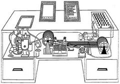

|
|||
| Vannevar Bush | Paul Baran | J.C.R. Licklider | Lawrence Roberts |
| Robert Metcalfe | Douglas Engelbart | Vinton Cerf | Robert E. Kahn |
|
Vannevar Bush (1890-1974)
1945 júniusában, az Atlantic Monthly című folyóiratban publikálta az Út a gondolkodás felé (As we may think) című tanulmányát, és ezzel gyakorlatilag lefektette a hipertext koncepciójának alapjait. Bush egy olyan gépezetet álmodott meg, amely megkönnyítené az egyre halmozódó tudásmennyiségben való eligazodást. Az asztal Memex (MEMory Extender) mikrofilmen tárolná az információkat és egyedi, az emberi szem számára láthatatlan kódok alapján kínálná ezekhez azonnali hozzáférést.  A gép igazi újítása az ebben a dokumentum-labirintusban való eligazodás módja. A hagyományos adatstrukturálással, azaz a könyvtárak alfabetikus, illetve szigorúan hierarchikus információtárolási rendszerével ellentétben a Memex az emberi asszociációkhoz hasonló megoldást kínálna. Az "összekapcsoló indexelés" révén ugyanis lehetővé válik direkt utalások kiépítése és használata az adathalmazban: bármely szöveg bármely részletéhez hozzárendelhető bármely szöveg bármely részlete. Az így kialakított kapcsolat aztán későbbi felidézés céljából eltárolható a gépezet memóriájában. Ez a koncepció lényegében semmiben nem különbözik a hipertextes link mai fogalmától: a linkre való kattintással, illetve a megfelelő billentyűkombináció lenyomásával azonnal a hipertextes szöveguniverzum más helyeire ugorhatunk. Munkássága máig is tartó inspirációforrássá vált, többek között hozzájárult Ted Nelson, Douglas Engelbart és Tim Berners Lee munkálataihoz, amik eredménye a mai Web lett. |
|||
 Vannevar Bush Roosevelt elnök tudományos tanácsadója volt. 1946 és 1947 között, Bush elnöke volt a "Joint Research and Development Board"-nak. Ebből a szervezetből született meg később az ARPA.
Vannevar Bush Roosevelt elnök tudományos tanácsadója volt. 1946 és 1947 között, Bush elnöke volt a "Joint Research and Development Board"-nak. Ebből a szervezetből született meg később az ARPA.